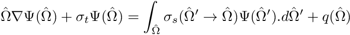

Let us tackle a basic transport simulation on a 3D mesh

Step 1 - Create your input file, open it in a text editor
As before, go to the directory of your choosing and make an input file of your choosing.
Step 2 - Create a mesh
As was done in Tutorials 1 and 2 we create the 3D mesh as follows:
nodes={}
N=32
ds=2.0/N
for i=0,N do
nodes[i+1] = -1.0 + i*ds
end
Handle chiMeshHandlerCreate()
Two chiMeshCreateUnpartitioned3DOrthoMesh(array_float x_nodes, array_float y_nodes, array_float z_nodes)
void chiVolumeMesherExecute()
Next we set the material IDs:
Handle chiLogicalVolumeCreate(int TypeIndex, varying Values)
void chiVolumeMesherSetProperty(int PropertyIndex, varying PropertyValue)
void Set(VecDbl &x, const double &val)
Step 3 - Add a material with a transport cross-section
Similar to the diffusion tutorial we have to create a material, then add a property to it, and then to set the property.
num_groups = 1
TRANSPORT_XSECTIONS,
SIMPLEXS1,
num_groups, --Num grps
1.0, --Sigma_t
0.2) --Scattering ratio
MaterialHandle chiPhysicsAddMaterial(char Name)
void chiPhysicsMaterialAddProperty(int MaterialHandle, int PropertyIndex)
void chiPhysicsMaterialSetProperty(int MaterialHandle, int PropertyIndex, int OperationIndex, varying Information)
The general material property TRANSPORT_XSECTIONS is used for non-fission transport materials. Simple cross-sections can be specified by using the operation SIMPLEXS1 which expects the number of groups, the total cross-section, and then the scattering ratio.
Step 4 - Add Transport physics
--############################################### Setup Physics
phys1 = chiLBSCreateSolver()
chiSolverAddRegion(phys1,region1)
for k=1,num_groups do
end
--========== Groupset def
--========== Boundary conditions
bsrc = {}
for k=1,num_groups do
bsrc[k] = 0.0
end
bsrc[1] = 0.5
YMIN,LBSBoundaryTypes.INCIDENT_ISOTROPIC,bsrc);
--========== Solvers
void chiLBSSetProperty(int SolverIndex, int PropertyIndex)
void chiLBSGroupsetAddGroups(int SolverIndex, int GroupsetIndex, int FromIndex, int ToIndex)
void chiLBSGroupsetSetQuadrature(int SolverIndex, int GroupsetIndex, int QuadratureIndex)
void chiLBSCreateGroup(int SolverIndex, int GroupId)
void chiLBSGroupsetSetAngleAggregationType(int SolverIndex, int GroupsetIndex, int AggregationType)
void chiLBSGroupsetSetIterativeMethod(int SolverIndex, int GroupsetIndex, int IterativeMethod)
void chiLBSCreateGroupset(int SolverIndex)
Returns chiCreateProductQuadrature(int QuadratureType, varying values)
A transport solver is invoked by using a call to chiLBSCreateSolver(). This creates a derived object based on a base physics solver so the mesh region gets added to the solver using the generic call chiSolverAddRegion(). Past this point we need to create the single required group with chiLBSCreateGroup(), although we put this in a loop for in-case we want to increase the number of groups, and then a quadrature rule for integration of the angular fluxes. Since we are dealing with a 3D simulation we will be integrating over  , the polar angle, and
, the polar angle, and  , the azimuthal angle. A quadrature with favorable parallel properties is the Gauss-Legendre-Chebyshev quadrature. We create this quadrature with a call to chiCreateProductQuadrature() and specifying GAUSS_LEGENDRE_CHEBYSHEV as the rule and we then specify 2 azimuthal angles per octant and 2 polar angles per octant.
, the azimuthal angle. A quadrature with favorable parallel properties is the Gauss-Legendre-Chebyshev quadrature. We create this quadrature with a call to chiCreateProductQuadrature() and specifying GAUSS_LEGENDRE_CHEBYSHEV as the rule and we then specify 2 azimuthal angles per octant and 2 polar angles per octant.
The next step in the process is to assign a group-set. Group-sets are very useful aggregation features in higher dimension simulations but here we only have a single groupset. The group-set is created with a call to chiLBSCreateGroupset(). Next we add groups to the group-set using a range, however, since we only have one group here the range will be 0 to 0. The final piece of a groupset is to add a quadrature which is achieved with a call to chiLBSGroupsetSetQuadrature().
Step 5 - Initialize and Execute
chiLBSInitialize(phys1)
chiLBSExecute(phys1)
This should be intuitive.
Step 6 - Add output
if (chi_location_id == 0) then
local handle = io.popen("python ZLFFI00.py")
end
Pair chiLBSGetScalarFieldFunctionList(int SolverIndex)
void chiFFInterpolationExportPython(int FFIHandle, char BaseName)
Handle chiFFInterpolationCreate(int FFITypeIndex)
void chiFFInterpolationExecute(int FFIHandle)
void chiFFInterpolationInitialize(int FFIHandle)
Handle chiFFInterpolationSetProperty(int FFIHandle, int PropertyIndex)
Instead of using a SLICE interpolator we instead opt to use a LINE interpolator. A line-interpolator needs two points as the initial and final point (i.e. LINE_FIRSTPOINT and LINE_SECONDPOINT) as well as the total number of points LINE_NUMBEROFPOINTS. Finally add the first available scalar field field function to the interpolator.
The output should look as follows:

Figure 1 - Output of the 1D simulation
Fully commented code
--############################################### Setup mesh
nodes={}
N=32
ds=2.0/N
for i=0,N do
nodes[i+1] = -1.0 + i*ds
end
--############################################### Add material
num_groups = 1
TRANSPORT_XSECTIONS,
SIMPLEXS1,
num_groups, --Num grps
1.0, --Sigma_t
0.2) --Scattering ratio
--############################################### Setup Physics
phys1 = chiLBSCreateSolver()
chiSolverAddRegion(phys1,region1)
for k=1,num_groups do
end
--========== Groupset def
--========== Boundary conditions
bsrc = {}
for k=1,num_groups do
bsrc[k] = 0.0
end
bsrc[1] = 0.5
YMIN,LBSBoundaryTypes.INCIDENT_ISOTROPIC,bsrc);
--========== Solvers
chiLBSInitialize(phys1)
chiLBSExecute(phys1)
--############################################### Setup Output
if (chi_location_id == 0) then
local handle = io.popen("python ZLFFI00.py")
end
void chiSurfaceMesherSetProperty(int PropertyNumber, varying PropertyValue)
void chiExportFieldFunctionToVTK(int FFHandle, char BaseName)